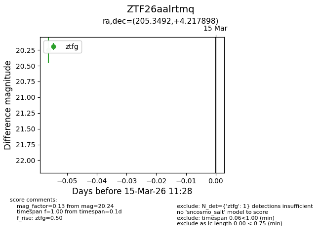
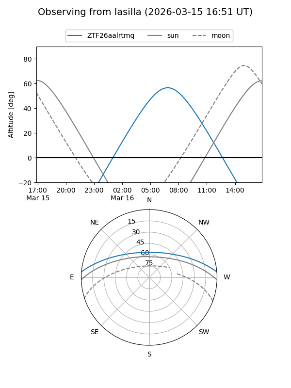
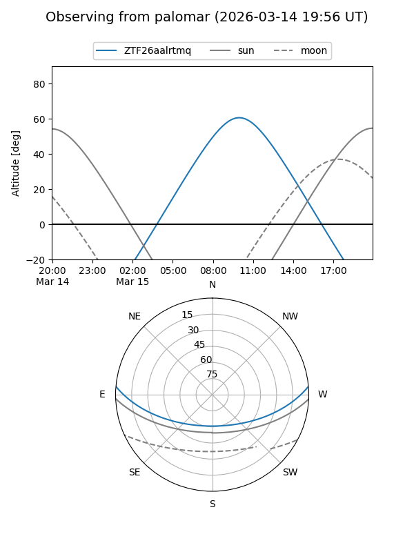

ZTF26aalrtmq
Target ZTF26aalrtmq at 2026-03-15 11:30
Aliases and brokers:
FINK: link
Lasair: link
ALeRCE: link
alt names
ZTF26aalrtmq (ztf,fink_ztf)
Coordinates:
equatorial (ra, dec) = 205.3492,+4.21790
equatorial (HMS+DMS) = 13:41:23.82,+04:13:04.43
galactic (l, b) = (332.6057,+64.17256)
Flags:
Photometry:
last ztfg=20.24
1 ztfg detections
Lightcurve

Visibility


Additional plots